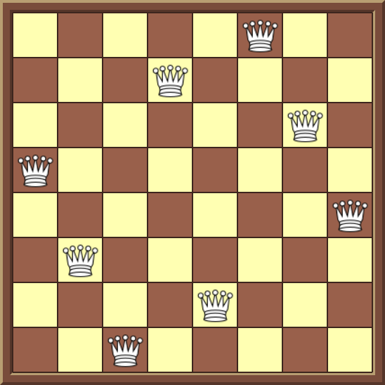
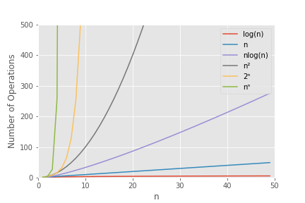

The N-Queens Puzzle
In these posts I take a brief look at the N-Queens Puzzle, and some algorithms to solve it, including recursion and backtracking.
The Puzzle
The N-Queens puzzle is a generalisation of the 8-Queens puzzle originally published by Max Bezzel in 1848. The challenge of the 8-Queens puzzle is to place eight chess queens on a standard 8x8 chessboard such that no piece can take any other piece. In essence this means that no two queens can share the same row, column or diagonal. The N-Queens puzzle extends this to finding solutions for N chess queens being placed on an NxN chessboard.
Fig. 1: One of 92 possible solutions for the 8-Queens Puzzle
These posts will be broken in to several sections, covering different aspects of the problem:
- What is the scaling of the N-Queens puzzle with N?
- For a board of size N, how many solutions to the puzzle are there?
- For a board of size N, how can we find any single solution to the puzzle?
1. What is the scaling of the N-Queens puzzle with N?
We can start to get an idea of the scaling of the N-Queens problem using combinatorics. Given N Queens and an NxN chessboard to place them on, how many ways can the queens be placed? The first Queen we try can be placed in N² positions, the second has (N² - 1) positions etc., until we try to place the Nth queen which has (N² - (N - 1)) positions it can be placed. This gives us
N² * (N² - 1) * (N² - 2) * ... * (N² - (N - 1))
possible positions. Using factorials, this can be simplified to:
(N²)! / (N²-N)!
We also need to account for the fact that each of the N queens are equivalent to each other, so given a board with N queens on it, switching the positions of any of the queens does not give us a different solution. Essentially we care about the number of combinations that N queens can be placed on the NxN chessboard, not the number of permutations. Therefore we need to divide by number of permutations of N queens, which is N!. This gives the total number of ways to place N queens on an NxN chessboard as:
(N²)! / ((N²-N)! * N!)
Using the above formula, we can calculate the number of different ways we can place N queens on the NxN chess board. In Table 1 below this is calculated from N=1 to N=12, and N=27, alongside the known number os solutions to the N-Queens problem for each N. As of March 2020, the total number of solutions to the N-Queens problem has been calculated up to N=27 (N=27 was determined in Sep 2016).
| N | Possible Board Placements | Fundamental N-Queens Solutions | All N-Queens Solutions |
|---|---|---|---|
| 1 | 1 | 1 | 1 |
| 2 | 6 | 0 | 0 |
| 3 | 84 | 0 | 0 |
| 4 | 1820 | 1 | 2 |
| 5 | 53130 | 2 | 10 |
| 6 | 1947792 | 1 | 4 |
| 7 | 85900584 | 6 | 40 |
| 8 | 4426165368 | 12 | 92 |
| 9 | 260887834350 | 46 | 352 |
| 10 | 17310309456440 | 92 | 724 |
| 11 | 1.276 e+15 | 92 | 724 |
| 12 | 1.036 e+17 | 1787 | 14200 |
| ... | ... | ... | |
| 27 | 1.208 e+77 | 2.936 e+16 | 2.349 e+17 |
Table 1: Information on the number of possible queen placements, 'fundamental' and 'all' solutions to the N-Queens problem for various values of N. Note that 'Fundamental' solutions in the table above are all unique solutions to the N-queens problem that are not related by symmetry (since some solutions can be related by reflection or rotational symmetry). The 'All' solutions column counts all possible solutions, even if related by symmetry to another solution
As can be seen from Table 1 above, the total number of possible board positions increases at an incredible rate as N increases. In fact, it is easy to show that the scaling of the problem is O (N2N), as each queen we place on the board has approximately N2 positions to be placed in, and we have N queens to place. In fact we shall see later that even when we simplifly the puzzle by removing some degrees of freedom for the queens, that the scaling of the puzzle will still be O (NN) This is one of the worst possible scalings for an algorithm; its growth rate (green line) is compared to some other common computational time complexities in Fig 2. below:
Fig. 2: Plot of Number of Operations vs. input size (n) for several common computational time complexities.
Unfortunately, there is no known formula for the exact number of solutions for a given value of N - in order to find the number of solutions, all valid board positions must be generated. This is one of the reasons why the total number of solutions has only been solved to N=27; when 1.2 e+77 board arrangments must be checked this takes a long time. Even when using multiple processors in parallel to independently solve subsections of the problem, it is mentioned by the programmers that solved N=27 that around one eighth of the solutions were found by running their algorithm for more than a year(!). Hence any algorithm we implement here will only be practically useful to find the complete set of solutions for N << 27.
In the next section of this post we will write a simple algorithm to do this, which utilises recursion and backtracking to generate valid board positions.
2. Recursive and Backtracking Algorithms for N-Queens
To be continued....